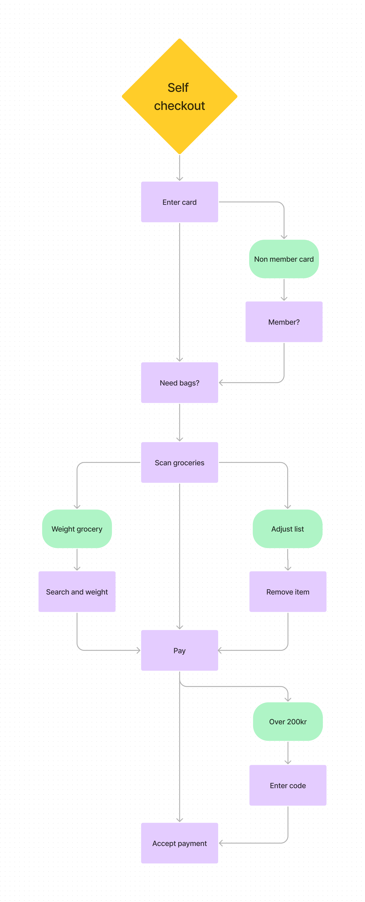
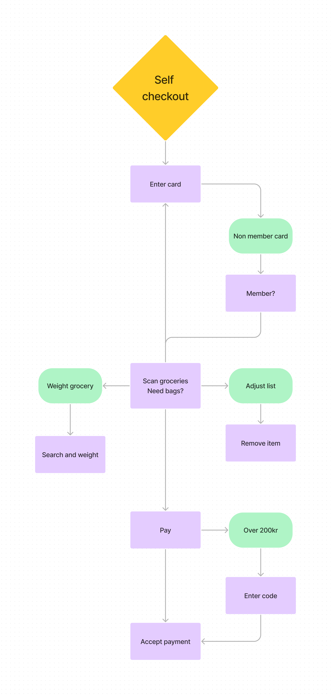
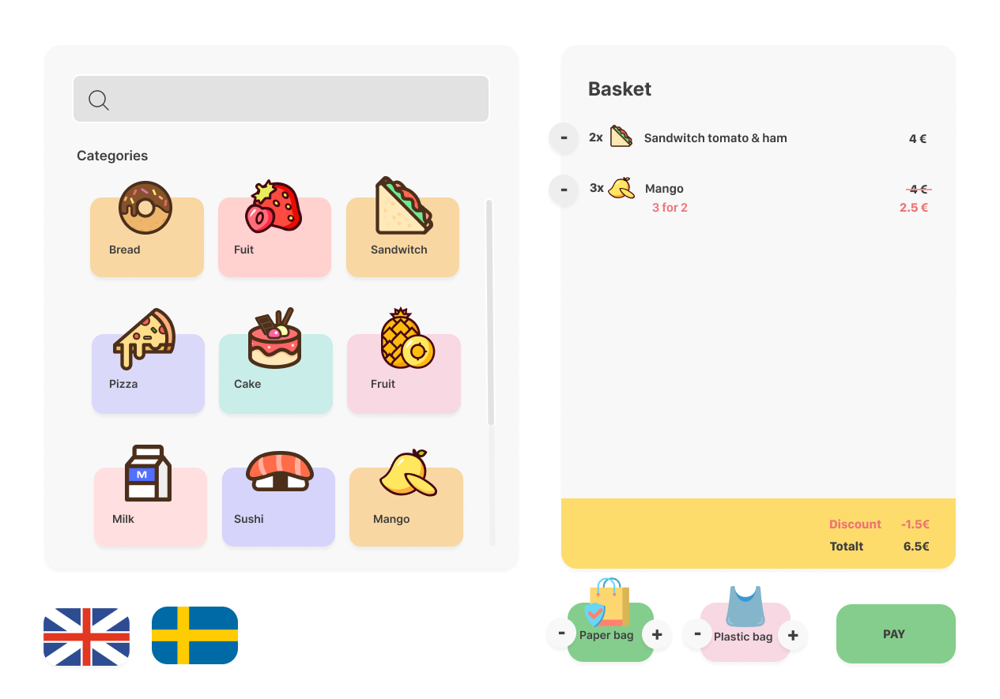

Design is a big part of my life. Not only do I strive to surround myself with beautiful things, but to make everyday task as effective and enjoyable as possible. It makes me question almost every mundane task I do during the day. It has a big part in why I love UX so much. One example is fast checkouts at supermarkets and stores. Questions I tent to ask myself is: How many clicks and steps are necessary to completing this task? Do I like this font, why? Are these functions necessary? Why do I get such satisfaction from pressing this button? You get the deal.
I thought it would be a fun little project to make my ideas more tangible, by designing prototypes! It will force me to think even further about why things are as they are, and why I like certain things more than others.
I started by creating a user flow of my mental model, based on currently active checkouts in Sweden.
After creating my user flow, I started questioning every interaction I had to make. I found that a dedicated window for the number of bags to buy was unnecessary, and wanted to test if could include it in the scan window instead.
As I don't design for a specific company, I had the chance to completely design the elements to my preferences, including colors, white spaces, fonts, positioning, shadows, edges, and buttons.
All in all, it was a fun little project and i think it turne out great!
I think i will be doing more of these:)
That's it for today, adiós amigo